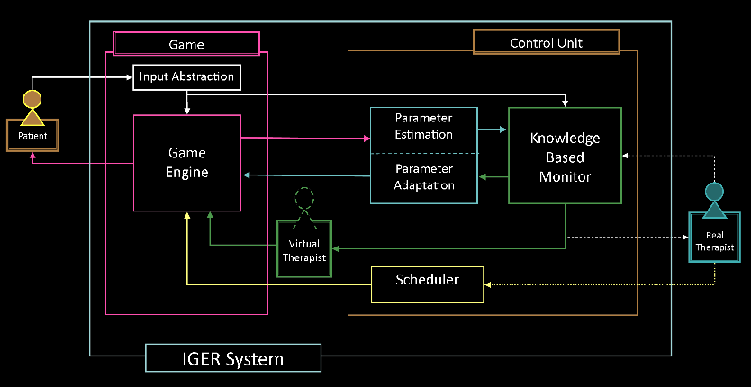
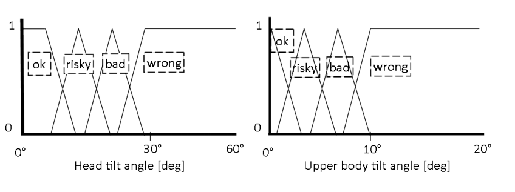
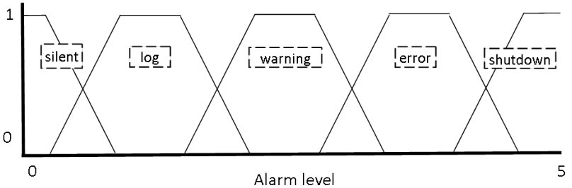

Document
Paper here!
Notes
My own notes
A brief summary
-
Abstract
- Rehabilitation games should be nicely integrated in stations, adhere constraints of clinical protocols, involve goal-oriented movements, and adapt patient's current progress.
- Current games rarely adapt to patient's condition.
- A new station is developed that employs a fuzzy system to monitor the exercises, according to medical constraints, that provides feedback to the patients.
-
Introduction
- Commercial motion-sensing game controllers have huge potential in rehabilitation.
- Rehabilitation games designed for these should be adjustable for patient and therapy goals.
-
A Hierarchical Platform for Rehabilitation at Home
- IGER: Intelligent Game Engine for Rehabilitation.
- The goal of the project is low-cost game-oriented platform that can be used in home.
- Platform includes a patient station, hospital station, and a networking station (PS, HS, NS)

-
The Game System
- Two components: Game engine and the game control unit.
- Game engine: Gaming functionalities.
- Game control unit: Matches needs of games for rehabilitation.
-
Fuzzy-Based Monitoring
- There are 4 different function for all parameters: OK, risky, bad, wrong. Total of these 4 in any point will be equal to 1.

- From these functions, 5 different severity(alarm) levels are computated:Silent, Log, Warning, Error, and Shotdown. Also total of these in any point is 1.

-
Bayesian-Based in-Game Adaptation
- The adequacy of the actual game parameters can be inferred by measuring the hit ratio inside the game.
- This ratio can be associated with the subjective difficulty of the game for a given patient.
- 2 different algorithms are implemented for DDA.
- First depends on performance of the patient in one repetition. Before game starts, the n game parameters can be adapted, and a target performance is set. After the repetition, real performance is computed from the hit ratio.
- If P_r > P_d, difficulty is increased.
- If P_r < P_d, difficulty is reduced.
- Second is built upon Quest Bayesian method. Works real-time. It is not level-based, it is trial-based. Each trial is either a pass or hit (binary). To adapt safely, define PDF of parameter x, f(x).
3 assumptions:
- Performance function always have the same shape
- Patient threshold should not vary between trials
- Individual trials are statistically independent.
- Quest function is: Q(x) = f_x(x)*f_D|x(D|x) = f_x(x)*( PI ( p_ri|x(x_i), i=1 to n)).
- Also we can develop cannonical function PHI(x_i - x) = p_x(x_i).
- With the help of cannonical function, we can develop success and failure functions: S(x_i) = PHI(-x_i), F(x_i) = 1 - PHI(-x_i).
- That makes the QUEST function: Q_i(x) = Q_(i-1)(x) * S(x - x_i)[IF SUCCESS] Q_i(x) = Q_(i-1)(x) * F(x - x_i)[IF FAILURE].
Also, as the PDF, Weibull function is selected.
-
A Self-Adaptive Rehabilitation Game
- Fruit catcher is a Kinect game.
- Can be used in two different rehabilitation scenarios: Weight Shifting and Stepping.
-
Discussion
-
Conclusion
Go back to the main page